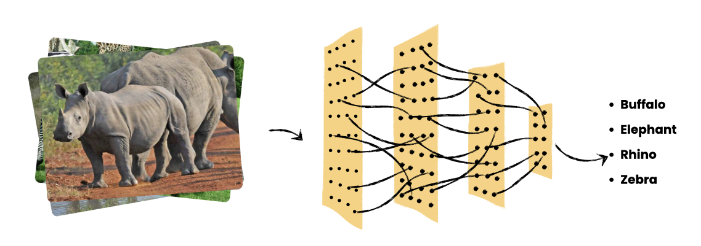

African WildLife Classification
Get ready to rumble with machine learning in the Wildest Contest of the Semester! Your mission: build a model that can distinguish between the fabulous four of African wildlife—Buffalo, Elephant, Rhino, and Zebra. This Machine Learning Safari meets Creature Classification Challenge runs weekly, with submissions evaluated every Friday at 5pm. So, forget the intimidation from whoever is currently king (or queen) of the AI jungle on the leaderboard. The only way to win this mane event is to git your models in gear and submit!

Ranking Procedure
- Model Evaluation: Each submitted model will be evaluated on the held-out test dataset and the Top-1 accuracy for each model will be calculated.
- Ranking: Participants will be ranked in descending order based on their model's Top-1 accuracy. The model with the highest Top-1 accuracy will be ranked first.
- Tie-breaking: If two or more models achieve the same Top-1 accuracy, the following tie-breaking criteria may be applied (in order of priority):
- Validation Accuracy: The model's accuracy on the provided validation set.
- Number of Parameters: The model with the fewer number of parameters will be ranked higher (to favor more efficient models).
- Training Time: The model with the shorter training time will be ranked higher.
Legend:
A (90%-100%)
B (80%-89%)
C (70%-79%)
D (60%-69%)
E (50%-59%)
F (<50%)